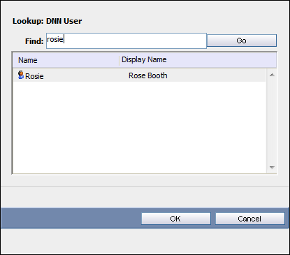
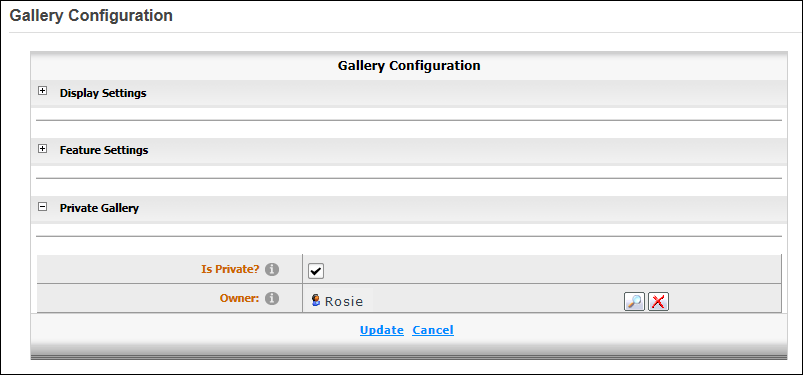

Configuring Private Gallery
Page Editors can create a private gallery using the Gallery module. This restricts the adding of files and sub albums to the selected gallery owner. Users who are authorized to view the gallery can view all approved files.
- Select
 Edit >
Edit >  Configuration from the Gallery module actions menu - OR - Click the Configuration button which is typically located at the bottom right corner of the module. This displays the Gallery Configuration page.
Configuration from the Gallery module actions menu - OR - Click the Configuration button which is typically located at the bottom right corner of the module. This displays the Gallery Configuration page.
- Maximize
 the Private Gallery section.
the Private Gallery section.
- At Is Private?, select from these options:
- to set the gallery as private.
- to set the gallery as public. Skip to Step 5.
-
- Select Edit > Configuration from the Gallery module actions menu to return to the Private Gallery.
- Maximize
the Private Gallery section.
- At Owner the name of the user who created the Private Gallery is displayed as the owner. You can select a different the gallery owner as follows:
- Click the Search button.
- In the Find text box, enter the username - OR - just the first letter(s) of the username - OR - Leave blank to view all users.
- Click the Go button. This displays the matching users in the Name/Display Name list.
- Select the required user.

-

Configuring a Private Gallery